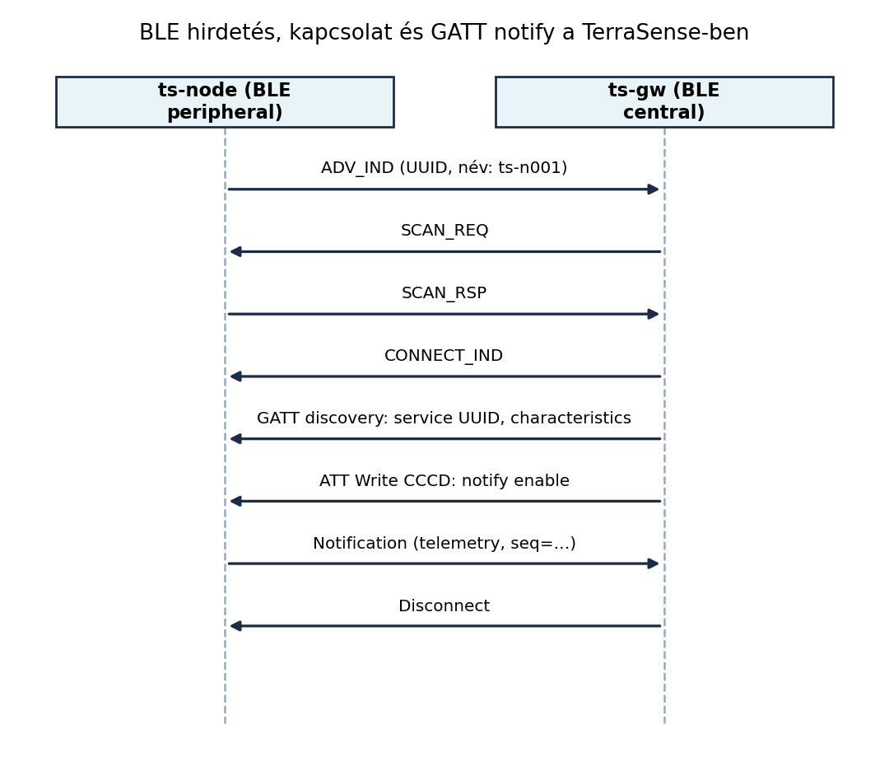

A Rádiós technológiák összevetése: hatótáv, energia, sávszélesség, költség alfejezetben a TerraSense csomópont–gateway szakaszára a BLE mellett döntöttünk. A ts-node egy üvegházban, legfeljebb néhány tíz méterre van a ts-gw-től, és 10 percenként küld néhány száz bájt telemetriát. A klasszikus Bluetooth folyamatos kapcsolata és nagyobb fogyasztása felesleges lenne, a Wi-Fi pedig az energia- és költségkeretet feszítené szét. A BLE alacsony fogyasztása, olcsó moduljai és az okostelefonos provisioning lehetősége illeszkedik a TerraSense céljaihoz. Ebben az alfejezetben megtervezzük a ts-node BLE-interfészét: a hirdetésből a gateway felismeri a csomópontot, a GATT-szolgáltatáson keresztül pedig a telemetriát, az állapotot és a parancsokat cseréljük. Ez az interfész lesz a későbbi gateway-fordítás és az üzembe helyezés alapja.
Definíció. A Bluetooth Low Energy (BLE) a Bluetooth 4.0-tól bevezetett, alacsony energiafogyasztású rádiós technológia. A 2,4 GHz-es sávban 40 csatornát használ, ebből 3 hirdetési csatorna (37, 38, 39) és 37 adatcsatorna; a kapcsolatban frekvenciaugrást (adaptive frequency hopping) alkalmaz. A fizikai adatsebesség tipikusan 1 Mb/s, opcionálisan 2 Mb/s vagy kódolt PHY.
Definíció. A GAP (Generic Access Profile) határozza meg a szerepeket. A peripheral hirdeti magát, és GATT-szerverként szolgál ki; a central pásztázik, kapcsolatot kezdeményez, és jellemzően GATT-kliens. A broadcaster csak hirdet, az observer csak pásztázik, kapcsolódás nélkül. Ugyanaz az eszköz több szerepet is felvehet, de a TerraSense-ben a ts-node peripheral, a ts-gw central.
A hirdetés (advertising) során a peripheral periodikusan, a három hirdetési csatornán ADV_IND csomagokat küld. A hirdetési adat legfeljebb 31 bájt hasznos adatot tartalmazhat (legacy advertising), amely szolgáltatás-UUID-t, nevet, gyártói adatot vagy beacon-formátumot hordozhat. A central a SCAN_REQ/SCAN_RSP váltással további adatot kérhet, vagy kapcsolatot kezdeményez (CONNECT_IND). A hirdetési intervallum 20 ms és 10,24 s között állítható; a rövidebb intervallum gyorsabb felfedezést, de nagyobb fogyasztást eredményez.
A beacon-alapú telemetria azt jelenti, hogy az eszköz a hirdetési csomagban közvetlenül adatot sugároz, kapcsolat nélkül. Például a BTHome vagy az iBeacon/Eddystone formátum egy hőmérséklet-értéket is elhelyezhet a 31 bájtban. Ez energiatakarékos, mert nincs kapcsolatfelépítés, viszont nincs nyugtázás, nincs titkosítás, és a hirdetési csatornák torlódhatnak. A TerraSense telemetriája 200 B körüli, ezért nem fér el a legacy hirdetésben; a hirdetést felderítésre és jelenlétre, a tényleges adatcserét GATT-kapcsolatra bízzuk.
Definíció. A GATT (Generic Attribute Profile) az ATT (Attribute Protocol) fölé épülő keretrendszer. A GATT-szerver egy attribútumtáblát tart fenn; az attribútumoknak 16 vagy 128 bites UUID-ja, értéke és jogosultságai vannak. A GATT-kliens felfedezi a szolgáltatásokat, olvas, ír, vagy feliratkozik a notify/indicate értesítésekre. A notify esetén a szerver elküldi az új értéket, de nem vár alkalmazásszintű nyugtát; az indicate esetén a kliens visszaigazol. A TerraSense telemetriájához a notify elegendő, mert a seq mező és a későbbi MQTT-ingest idempotenciája kezeli az elvesztést.

A kapcsolat felépítése után a gateway feliratkozik a telemetria karakterisztikára. A CCCD (Client Characteristic Configuration Descriptor) írásával engedélyezi a notify-t, így a ts-node minden új mintánál értesíti a gatewayt. A parancsok a cmd karakterisztikán lefelé, a visszaigazolás a cmd_result karakterisztikán felfelé halad.
Biztonság: párosítási szintek röviden. A BLE párosítás célja a kapcsolat titkosítása és a felek hitelesítése. A LE Security Mode 1 szintjei: Level 1 – nincs biztonság; Level 2 – nem hitelesített párosítás titkosítással; Level 3 – hitelesített párosítás (pl. passkey); Level 4 – hitelesített LE Secure Connections. A társítási módszerek: Just Works (nincs felhasználói beavatkozás, sebezhető passzív lehallgatásra), Passkey Entry, Numeric Comparison és Out-of-Band. A TerraSense valós telepítésénél a node és a gateway közötti kapcsolatot hitelesített LE Secure Connections szintre állítjuk, különösen a cmd és a provisioning írásakor, mert a nyílt GATT-írás lehetővé tenné idegen parancs bejuttatását.
A hirdetés alapú és a kapcsolat alapú adatküldés közötti választást az alábbi táblázat foglalja össze:
| Szempont | Hirdetés (beacon) | GATT-kapcsolat |
|---|---|---|
| Előzetes kapcsolatfelépítés | nincs | van, néhány 10 ms–100 ms |
| Nyugtázás | nincs | ATT/alkalmazásszinten van |
| Hasznos adat legacy hirdetésben | ≤ 31 B | néhány száz B attribútumonként |
| Energia | alacsony, ha a hirdetési intervallum nagy | magasabb a kapcsolati események miatt |
| Késleltetés | hirdetési intervallum függvénye | a kapcsolat fenntartása, de notify azonnal |
| Tipikus alkalmazás | jelenlét, kicsi státusz, beltéri pozíció | telemetria, parancs, firmware |
A TerraSense-ben a hirdetést a felderítésre és a node jelenlétének
jelzésére használjuk; a hirdetési adatban a szolgáltatás-UUID és a
ts-n001 eszköznév jelenik meg (Flags 3 B + UUID 18 B + név
9 B = 30 B ≤ 31 B); a site-azonosító (gh1) a Provision
karakterisztikában van. A telemetriát, az állapotot és a parancsokat
GATT-on cseréljük, mert a 200 B-os telemetria és a megbízhatósági igény
ezt indokolja. A beacon-alapú telemetria akkor lenne elegendő, ha a
csomópont csak egyetlen hőmérsékletértéket küldene, de a három szenzor
és a szelep visszajelzése túl nagy.
Munkakönyvtár:
mkdir -p ~/iot-labor/i023 && cd ~/iot-labor/i023Előfeltétel: a Miért RTOS? A Zephyr felépítése és az első alkalmazás projektváz ismerete. A labor a GATT-interfész specifikációját és egy Zephyr BLE peripheral vázát hozza létre.
Hozd létre a ~/iot-labor/i023/gatt-interface.md fájlt az
alábbi tartalommal. Ez a fájl a későbbi gateway-fordítás és provisioning
kiindulópontja.
# TerraSense GATT-interfész (i023)
Szolgáltatás neve: TerraSense Service
Szolgáltatás UUID: a3f4c8d1-2b6e-4f1a-9c3e-7d8a5b1e0f42 (illusztratív, 128 bit)
Karakterisztikák:
- Telemetry UUID: a3f4c8d1-2b6e-4f1a-9c3e-7d8a5b1e0f43
tulajdonságok: READ | NOTIFY
érték: telemetria bájtok; séma az i032 alfejezetben
- State UUID: a3f4c8d1-2b6e-4f1a-9c3e-7d8a5b1e0f44
tulajdonságok: READ | NOTIFY
érték: node állapot, pl. "online", "watering"
- Cmd UUID: a3f4c8d1-2b6e-4f1a-9c3e-7d8a5b1e0f45
tulajdonságok: WRITE (write with response)
érték: parancs, pl. {"cmd":"valve","state":"open"}
- Cmd Result UUID: a3f4c8d1-2b6e-4f1a-9c3e-7d8a5b1e0f46
tulajdonságok: NOTIFY
érték: parancs eredménye, pl. {"cmd_id":7,"result":"ok"}
- Provision UUID: a3f4c8d1-2b6e-4f1a-9c3e-7d8a5b1e0f47
tulajdonságok: WRITE | READ
érték: site/node konfiguráció, pl. {"site":"gh1","node":"n001"}
Biztonság: valós telepítésnél LE Secure Connections; a laborban nincs párosítás.A 128 bites UUID-k nem szabványosak, a laborhoz generáltuk őket. Valós termékben a gyártó saját regisztrált UUID-jait kell használni, hogy elkerüljük az ütközést.
Hozd létre a ~/iot-labor/i023/ts-node-ble/ projektet. A
src/main.c a GATT-szolgáltatást definiálja, elindítja a
hirdetést, és működő notify-, illetve write-utat tartalmaz. A kód a
Zephyr 3.7 API-t használja: a BT_GATT_CHARACTERISTIC hat
argumentumot vár (UUID, tulajdonságok, jogosultság, read, write,
user_data), a notify karakterisztikákhoz külön BT_GATT_CCC
descriptor tartozik, a parancsot write callback dolgozza fel, az
eredményt pedig notify küldi vissza.
#include <string.h>
#include <zephyr/kernel.h>
#include <zephyr/bluetooth/bluetooth.h>
#include <zephyr/bluetooth/conn.h>
#include <zephyr/bluetooth/att.h>
#include <zephyr/bluetooth/gatt.h>
#include <zephyr/logging/log.h>
#include <zephyr/sys/byteorder.h>
LOG_MODULE_REGISTER(ts_node_ble, LOG_LEVEL_DBG);
#define DEVICE_NAME "ts-n001"
#define DEVICE_NAME_LEN (sizeof(DEVICE_NAME) - 1)
#define ADV_INT_MIN 160 /* 100 ms, az egység 0,625 ms */
#define ADV_INT_MAX 320 /* 200 ms */
/* Illusztratív TerraSense UUID-k, a BT_UUID_DECLARE_128 makró bájtsorrendje szerint. */
#define TS_UUID_SERVICE BT_UUID_DECLARE_128(0x42, 0x0f, 0x1e, 0x5b, 0x8a, 0x7d, \
0x3e, 0x9c, 0x1a, 0x4f, 0x6e, 0x2b, 0xd1, 0xc8, 0xf4, 0xa3)
#define TS_UUID_TELEMETRY BT_UUID_DECLARE_128(0x43, 0x0f, 0x1e, 0x5b, 0x8a, 0x7d, \
0x3e, 0x9c, 0x1a, 0x4f, 0x6e, 0x2b, 0xd1, 0xc8, 0xf4, 0xa3)
#define TS_UUID_STATE BT_UUID_DECLARE_128(0x44, 0x0f, 0x1e, 0x5b, 0x8a, 0x7d, \
0x3e, 0x9c, 0x1a, 0x4f, 0x6e, 0x2b, 0xd1, 0xc8, 0xf4, 0xa3)
#define TS_UUID_CMD BT_UUID_DECLARE_128(0x45, 0x0f, 0x1e, 0x5b, 0x8a, 0x7d, \
0x3e, 0x9c, 0x1a, 0x4f, 0x6e, 0x2b, 0xd1, 0xc8, 0xf4, 0xa3)
#define TS_UUID_CMD_RESULT BT_UUID_DECLARE_128(0x46, 0x0f, 0x1e, 0x5b, 0x8a, 0x7d, \
0x3e, 0x9c, 0x1a, 0x4f, 0x6e, 0x2b, 0xd1, 0xc8, 0xf4, 0xa3)
#define TS_UUID_PROVISION BT_UUID_DECLARE_128(0x47, 0x0f, 0x1e, 0x5b, 0x8a, 0x7d, \
0x3e, 0x9c, 0x1a, 0x4f, 0x6e, 0x2b, 0xd1, 0xc8, 0xf4, 0xa3)
static uint8_t telemetry_data[200];
static uint8_t state_data[] = "online";
static uint8_t cmd_data[64];
static uint8_t provision_data[64];
static uint16_t provision_len;
static const struct bt_gatt_attr *telemetry_attr;
static const struct bt_gatt_attr *cmd_result_attr;
static struct bt_conn *current_conn;
static struct k_work_delayable telemetry_work;
static struct k_work cmd_work;
static ssize_t telemetry_read(struct bt_conn *conn,
const struct bt_gatt_attr *attr,
void *buf, uint16_t len, uint16_t offset)
{
return bt_gatt_attr_read(conn, attr, buf, len, offset,
telemetry_data, sizeof(telemetry_data));
}
static ssize_t state_read(struct bt_conn *conn,
const struct bt_gatt_attr *attr,
void *buf, uint16_t len, uint16_t offset)
{
return bt_gatt_attr_read(conn, attr, buf, len, offset,
state_data, sizeof(state_data) - 1);
}
static ssize_t provision_read(struct bt_conn *conn,
const struct bt_gatt_attr *attr,
void *buf, uint16_t len, uint16_t offset)
{
return bt_gatt_attr_read(conn, attr, buf, len, offset,
provision_data, provision_len);
}
static ssize_t provision_write(struct bt_conn *conn,
const struct bt_gatt_attr *attr,
const void *buf, uint16_t len,
uint16_t offset, uint8_t flags)
{
ARG_UNUSED(conn);
ARG_UNUSED(attr);
ARG_UNUSED(flags);
if (offset != 0) {
return BT_GATT_ERR(BT_ATT_ERR_INVALID_OFFSET);
}
if (len > sizeof(provision_data)) {
return BT_GATT_ERR(BT_ATT_ERR_INVALID_ATTRIBUTE_LEN);
}
memcpy(provision_data, buf, len);
provision_len = len;
LOG_INF("Provisioning adat frissítve (%u B)", len);
return len;
}
static ssize_t cmd_write(struct bt_conn *conn,
const struct bt_gatt_attr *attr,
const void *buf, uint16_t len,
uint16_t offset, uint8_t flags)
{
ARG_UNUSED(conn);
ARG_UNUSED(attr);
ARG_UNUSED(flags);
if (offset != 0) {
return BT_GATT_ERR(BT_ATT_ERR_INVALID_OFFSET);
}
if (len == 0 || len >= sizeof(cmd_data)) {
return BT_GATT_ERR(BT_ATT_ERR_INVALID_ATTRIBUTE_LEN);
}
memcpy(cmd_data, buf, len);
cmd_data[len] = '\0';
k_work_submit(&cmd_work);
return len;
}
static void ccc_changed(const struct bt_gatt_attr *attr, uint16_t value)
{
ARG_UNUSED(attr);
LOG_DBG("CCCD módosult: 0x%04x", (unsigned int)value);
}
static void telemetry_work_handler(struct k_work *work)
{
static uint32_t seq;
int err;
if (current_conn != NULL &&
bt_gatt_is_subscribed(current_conn, telemetry_attr, BT_GATT_CCC_NOTIFY)) {
sys_put_le32(seq++, telemetry_data);
sys_put_le32(k_uptime_get_32(), &telemetry_data[4]);
err = bt_gatt_notify(current_conn, telemetry_attr,
telemetry_data, sizeof(telemetry_data));
if (err) {
LOG_ERR("Telemetry notify hiba: %d", err);
}
}
/* A laborban 10 másodperc; a valós TerraSense-ben 10 perc. */
k_work_schedule(&telemetry_work, K_SECONDS(10));
}
static void cmd_work_handler(struct k_work *work)
{
static const char result_ok[] = "{\"cmd_id\":0,\"result\":\"ok\"}";
static const char result_unknown[] = "{\"cmd_id\":0,\"result\":\"unknown\"}";
const char *result;
size_t result_len;
int err;
ARG_UNUSED(work);
if (current_conn == NULL ||
!bt_gatt_is_subscribed(current_conn, cmd_result_attr, BT_GATT_CCC_NOTIFY)) {
LOG_WRN("Nincs feliratkozott gateway, az eredmény nem küldhető el");
return;
}
if (strstr((const char *)cmd_data, "\"state\":\"open\"") != NULL) {
result = result_ok;
} else {
result = result_unknown;
}
result_len = strlen(result);
err = bt_gatt_notify(current_conn, cmd_result_attr, result, result_len);
if (err) {
LOG_ERR("Command result notify hiba: %d", err);
}
}
static struct bt_gatt_attr attrs[] = {
BT_GATT_PRIMARY_SERVICE(TS_UUID_SERVICE),
BT_GATT_CHARACTERISTIC(TS_UUID_TELEMETRY,
BT_GATT_CHRC_READ | BT_GATT_CHRC_NOTIFY,
BT_GATT_PERM_READ, telemetry_read, NULL, NULL),
BT_GATT_CCC(ccc_changed, BT_GATT_PERM_READ | BT_GATT_PERM_WRITE),
BT_GATT_CHARACTERISTIC(TS_UUID_STATE,
BT_GATT_CHRC_READ | BT_GATT_CHRC_NOTIFY,
BT_GATT_PERM_READ, state_read, NULL, NULL),
BT_GATT_CCC(ccc_changed, BT_GATT_PERM_READ | BT_GATT_PERM_WRITE),
BT_GATT_CHARACTERISTIC(TS_UUID_CMD,
BT_GATT_CHRC_WRITE,
BT_GATT_PERM_WRITE, NULL, cmd_write, NULL),
BT_GATT_CHARACTERISTIC(TS_UUID_CMD_RESULT,
BT_GATT_CHRC_NOTIFY,
BT_GATT_PERM_NONE, NULL, NULL, NULL),
BT_GATT_CCC(ccc_changed, BT_GATT_PERM_READ | BT_GATT_PERM_WRITE),
BT_GATT_CHARACTERISTIC(TS_UUID_PROVISION,
BT_GATT_CHRC_READ | BT_GATT_CHRC_WRITE,
BT_GATT_PERM_READ | BT_GATT_PERM_WRITE,
provision_read, provision_write, NULL),
};
static struct bt_gatt_service ts_svc = BT_GATT_SERVICE(attrs);
static const struct bt_data ad[] = {
BT_DATA_BYTES(BT_DATA_FLAGS, (BT_LE_AD_GENERAL | BT_LE_AD_NO_BREDR)),
BT_DATA_BYTES(BT_DATA_UUID128_ALL, 0x42, 0x0f, 0x1e, 0x5b, 0x8a, 0x7d,
0x3e, 0x9c, 0x1a, 0x4f, 0x6e, 0x2b, 0xd1, 0xc8, 0xf4, 0xa3),
BT_DATA(BT_DATA_NAME_COMPLETE, DEVICE_NAME, DEVICE_NAME_LEN),
};
static const struct bt_le_adv_param *adv_param = BT_LE_ADV_PARAM(
BT_LE_ADV_OPT_CONNECTABLE, ADV_INT_MIN, ADV_INT_MAX, NULL);
static void connected(struct bt_conn *conn, uint8_t err)
{
if (err) {
LOG_ERR("Kapcsolódási hiba: 0x%02x", err);
return;
}
current_conn = bt_conn_ref(conn);
LOG_INF("Gateway csatlakozott");
}
static void disconnected(struct bt_conn *conn, uint8_t reason)
{
if (current_conn == conn) {
bt_conn_unref(current_conn);
current_conn = NULL;
}
LOG_INF("Gateway lecsatlakozott: 0x%02x", reason);
}
BT_CONN_CB_DEFINE(conn_callbacks) = {
.connected = connected,
.disconnected = disconnected,
};
int main(void)
{
int err;
k_work_init_delayable(&telemetry_work, telemetry_work_handler);
k_work_init(&cmd_work, cmd_work_handler);
err = bt_enable(NULL);
if (err) {
LOG_ERR("bt_enable hiba: %d", err);
return 0;
}
telemetry_attr = bt_gatt_find_by_uuid(attrs, ARRAY_SIZE(attrs),
TS_UUID_TELEMETRY);
cmd_result_attr = bt_gatt_find_by_uuid(attrs, ARRAY_SIZE(attrs),
TS_UUID_CMD_RESULT);
if (telemetry_attr == NULL || cmd_result_attr == NULL) {
LOG_ERR("GATT attribútum keresése sikertelen");
return 0;
}
err = bt_gatt_service_register(&ts_svc);
if (err) {
LOG_ERR("GATT service regisztrációs hiba: %d", err);
return 0;
}
err = bt_le_adv_start(adv_param, ad, ARRAY_SIZE(ad), NULL, 0);
if (err) {
LOG_ERR("Advertising indítási hiba: %d", err);
return 0;
}
LOG_INF("Advertising elindult, ts-n001");
k_work_schedule(&telemetry_work, K_SECONDS(10));
return 0;
}A telemetry_data 200 B-os tömb, mert a telemetria séma
(Adatformátumok: JSON, CBOR, Protocol Buffers,
SenML) ekkora; a laborban az első 8 bájton sorszám és uptime van, a
többi nulla. A 200 B-os notificationhöz a gatewaynek legalább 203 B-os
ATT MTU-t kell egyeztetnie; a prj.conf ezért 247 B-os L2CAP
TX MTU-t és 251 B-os ACL puffert állít be. Ha a gateway kisebb MTU-t
egyeztet, a notify rövidül vagy hibát ad, ezért a központi oldalon is
kezelni kell a töredezést.
A BT_GATT_CCC descriptor nélkül a kliens nem tud
feliratkozni, a bt_gatt_notify pedig nem küld értesítést. A
bt_gatt_is_subscribed ellenőrzés kapcsolatonként azt
vizsgálja, hogy a gateway tényleg beírta-e a CCCD-t notify módra. A
cmd karakterisztika write with response, így a parancs
átvétele ATT-szinten nyugtázott; a végrehajtás eredményét a
cmd_result notification adja vissza, ami együtt teljes
parancs–eredmény kört alkot. A valós termékben a
BT_GATT_PERM_WRITE helyett
BT_GATT_PERM_WRITE_ENCRYPT vagy
BT_GATT_PERM_WRITE_AUTHEN kell.
A bt_gatt_service_register() futásidejű regisztráció,
amelyet a CONFIG_BT_GATT_DYNAMIC_DB=y kapcsol be; enélkül a
hívás nem érhető el (a Kconfig-név a telepített Zephyr-kiadásban
ellenőrizendő). Statikus alternatíva a
BT_GATT_SERVICE_DEFINE(ts_svc, …) makró, ilyenkor a
regisztrációs hívás elmarad, az attribútumokat pedig a
ts_svc.attrs tömbön át érjük el.
A prj.conf:
CONFIG_BT=y
CONFIG_BT_PERIPHERAL=y
CONFIG_BT_GATT_DYNAMIC_DB=y
CONFIG_BT_DEVICE_NAME="ts-n001"
CONFIG_BT_L2CAP_TX_MTU=247
CONFIG_BT_BUF_ACL_TX_SIZE=251
CONFIG_BT_BUF_ACL_RX_SIZE=251
CONFIG_LOG=y
CONFIG_LOG_MODE_IMMEDIATE=yA CMakeLists.txt:
cmake_minimum_required(VERSION 3.20.0)
find_package(Zephyr REQUIRED HINTS $ENV{ZEPHYR_BASE})
project(ts-node-ble)
target_sources(app PRIVATE src/main.c)Ez a labor hardveres labor: a BLE-hirdetés és a GATT-kapcsolat valódi
BLE-controllert igényel. A native_sim boardon nincs
BLE-controller és nincs HCI-backend, ezért ott a bt_enable
-ENODEV vagy -ENOTSUP hibát ad, és a hirdetés
nem indul el; a native_sim build legfeljebb a BLE-től
független kódrészek fordítására alkalmas, a BLE-viselkedés ellenőrzésére
nem. A BabbleSim (nrf52_bsim) működő szimulációs út, de
külön fejlesztői környezet telepítését igényli, ezért ebben a laborban
nem használjuk.
A javasolt hardver nRF52840 DK (Cortex-M4F, beépített BLE-controller és J-Link debug probe). A build és a flash:
west build -d ~/iot-labor/i023/build-nrf -b nrf52840dk/nrf52840 ~/iot-labor/i023/ts-node-ble
west flash -d ~/iot-labor/i023/build-nrfA west flash a kártya J-Link probe-ját használja; a
felhasználónak jogosultsága kell a debug probe eléréséhez (jellemzően
plugdev csoport és udev-szabály) és a BlueZ D-Bus
szolgáltatásához (jellemzően bluetooth csoport vagy
polkit-szabály). A labor nem módosít rendszerbeállítást; ha a
bluetoothctl nem indul el, a jogosultságot a hálózati
adminisztrátor állítja be.
Linux oldalon a BlueZ bluetoothctl kliensével
pásztázhatunk és kapcsolódhatunk:
bluetoothctl[bluetooth]# scan on
Discovery started
[NEW] Device 12:34:56:78:9A:BC ts-n001
[bluetooth]# connect 12:34:56:78:9A:BC
Connection successful
[ts-n001]# menu gatt
[ts-n001]# list-attributesAz illusztratív kimenetben a MAC-cím kártyánként változik. A
list-attributes a TerraSense szolgáltatást és az öt
karakterisztikát (Telemetry, State, Cmd, Cmd Result, Provision)
listázza. A további lépések:
A <…> helyére a saját list-attributes
kimenetéből vett objektumútvonal vagy karakterisztika-UUID kerül (a
példában szereplő útvonalszámok nem fixek, a service0001
ráadásul gyakran a Zephyr GAP-szolgáltatásé):
[ts-n001]# select-attribute <Cmd Result útvonal vagy UUID>
[ts-n001]# notify on
[ts-n001]# select-attribute <Telemetry útvonal vagy UUID>
[ts-n001]# notify on
[ts-n001]# select-attribute <Cmd útvonal vagy UUID>
[ts-n001]# write "0x7b 0x22 0x63 0x6d 0x64 0x22 0x3a 0x22 0x76 0x61 0x6c 0x76 0x65 0x22 0x2c 0x22 0x73 0x74 0x61 0x74 0x65 0x22 0x3a 0x22 0x6f 0x70 0x65 0x6e 0x22 0x7d"A write a bluetoothctl-ben bájtokat vár
(itt a {"cmd":"valve","state":"open"} ASCII-kódjai); a
szöveges write "…" forma verziófüggő, laborban
ellenőrizendő. A parancsot tehát a Cmd karakterisztikára
írjuk, a telemetria karakterisztika csak READ|NOTIFY, arra az írás
„Write not permitted” hibát adna. A cmd_result csak akkor
érkezik meg, ha a Cmd Result CCCD-jét előbb beírtuk
(notify on); különben a kód a „Nincs feliratkozott gateway”
ágba fut.
A telemetria notification 10 másodpercenként érkezik (a laborban
lerövidített periódus), a cmd write után pedig a
cmd_result notification
{"cmd_id":0,"result":"ok"} vagy
{"cmd_id":0,"result":"unknown"} üzenetet ad. A
menu gatt, a select-attribute és a
write pontos elérhetősége BlueZ-verziófüggő; régebbi
BlueZ-ben ezek a parancsok közvetlenül a fő menüből is működnek. A
karakterisztikák objektumútvonalát mindig a saját
list-attributes kimenetéből kell venni.
A GATT-interfész működését öt szinten ellenőrizzük:
Advertising elindult, ts-n001 üzenetet naplózza. Ha a
bt_enable hibát ad, a CONFIG_BT hiányzik,
nincs controller, vagy native_sim-en futunk BLE-backend
nélkül.bluetoothctl scan on listázza a ts-node-ot. Ha nem,
ellenőrizd a hirdetési adatot és a BT_LE_ADV_PARAM-mal
beállított 100–200 ms-os intervallumot; a szolgáltatás-UUID-nak benne
kell lennie az ad tömbben.connect után a
list-attributes mutatja a szolgáltatást, az öt
karakterisztikát és a notify karakterisztikák CCCD descriptorát. Ha a
szolgáltatás hiányzik, a bt_gatt_service_register
visszatérési értéke vagy a bt_enable sorrendje hibás.notify on után 10 másodpercenként érkezik
a notification, benne a növekvő seq és az uptime értékkel.
Ha nem érkezik, a CCCD-t nem írta be a kliens, vagy a
bt_gatt_is_subscribed feltétel hamis.cmd
karakterisztikára írt {"cmd":"valve","state":"open"} után a
cmd_result notification
{"cmd_id":0,"result":"ok"} üzenetet ad; ismeretlen
parancsnál "unknown" az eredmény. Ez igazolja a write
callback és a result notify útját.| Tünet | Ok | Javítás |
|---|---|---|
bt_enable -ENODEV vagy -ENOTSUP |
Nincs BLE controller vagy nincs engedélyezve a stack | Ellenőrizd a prj.conf-ot; native_sim
helyett valós nRF52840 DK-t használj |
| A node nem látható a scan listában | Hirdetési adat üres vagy az intervallum túl nagy | Adj szolgáltatás-UUID-t és nevet az ad tömbböz;
ellenőrizd a BT_LE_ADV_PARAM intervallumát |
| A karakterisztikák nem jelennek meg | A GATT service regisztráció hibás vagy a bt_enable után
történt |
Ellenőrizd a bt_gatt_service_register visszatérési
értékét és a sorrendet |
| A gateway nem kap notify-t | A CCCD descriptor hiányzik vagy a kliens nem írta be a notify engedélyt | Győződj meg arról, hogy a karakterisztikához tartozik
BT_GATT_CCC, és a gateway feliratkozott |
A notify -EMSGSIZE hibát ad |
A gateway ATT MTU-ja kisebb 203 B-nál | A gateway egyeztessen nagyobb ATT MTU-t, vagy az alkalmazás töredezze a 200 B-os telemetriát |
A cmd write hibát ad |
Hibás offset, túl hosszú vagy üres üzenet, illetve hiányzó write engedély | Ellenőrizd a cmd_write offset- és hosszellenőrzését,
valamint a BT_GATT_PERM_WRITE jogosultságot |
| A parancs eredménye nem érkezik meg | A gateway nem iratkozott fel a cmd_result CCCD-re |
A gateway írja be a cmd_result CCCD-t notify módra |
ISR-ből hívott bt_gatt_notify. A
BLE-stack függvényei nem hívhatók megszakítás-kontextusból, mert belső
szinkronizációt és memóriaallokációt használhatnak. A szenzor
megszakításkezelője csak jelezzen egy szálnak vagy work queue-nak, és a
notify-t abból küldjük.
Túl kicsi hirdetési intervallum. Az energiagazdálkodásnál gyakori hiba a 10–20 ms-os hirdetés állandó használata. A TerraSense 10 perces mintavételénél 100–200 ms hirdetési intervallum is elegendő a felfedezéshez, és a rádiós energia töredékét fogyasztja.
Nyílt GATT-írás a parancsokhoz. A cmd
karakterisztika write engedélye BT_GATT_PERM_WRITE
titkosítás nélkül lehetővé teszi, hogy bárki a hatótávon belül szelepet
nyisson. Valós rendszerben BT_GATT_PERM_WRITE_ENCRYPT vagy
BT_GATT_PERM_WRITE_AUTHEN szükséges.
A hirdetési adat és a GATT-karakterisztika összekeverése. A hirdetésben csak kis mennyiségű, nem titkosított adatot szabad elhelyezni. A telemetriát nem a hirdetési csomagba tesszük, hanem GATT notify-jal küldjük el a kapcsolat létrejötte után.
Fogalmi kérdés. Mi a különbség a GATT notify és indicate között, és miért elegendő a TerraSense telemetriájához a notify?
Számolási feladat. A ts-node legacy hirdetést használ 1 s intervallummal. Egy ADV_IND csomag küldése csatornánként 376 µs-ig tart 1 Mb/s PHY mellett, és egy hirdetési esemény mindhárom hirdetési csatornán (37, 38, 39) egy-egy csomagot küld. Számítsd ki a hirdetési rádiós duty cycle-t, és becsüld meg az átlagos rádiós áramot, ha a TX csúcsáram 10 mA. Az eredményt illusztratívnak tekintjük.
Implementációs feladat. Egészítsd ki a labor
GATT-szolgáltatását egy Uptime karakterisztikával (UUID
a3f4c8d1-2b6e-4f1a-9c3e-7d8a5b1e0f48, READ | NOTIFY), amely
a node boot óta eltelt másodperceket adja vissza. Frissítsd a
gatt-interface.md-t is.
Hibakeresési feladat. A gateway sikeresen csatlakozik a ts-node-hoz, de a telemetria karakterisztika notify-ja nem érkezik meg. Sorold fel a lehetséges okokat, és add meg a javítás lépéseit.
A notify esetén a szerver elküldi az új értéket,
de a kliens nem küld alkalmazásszintű visszaigazolást; az
indicate esetén a kliens ATT-választ küld minden
értesítésre. A notify gyorsabb és kisebb forgalmú, de egy értesítés
elveszhet. A TerraSense telemetriája 10 percenként érkezik, a csomagban
seq sorszám van, és az MQTT-ingest a Ingest: MQTT-ből a backendbe, idempotensen
alfejezetben idempotensen fogadja a duplikátumokat, ezért a notify
elegendő. A indicate akkor lenne indokolt, ha minden egyes értesítés
megbízható kézbesítése alkalmazásszinten is kritikus lenne, és a lassabb
nyugtázás nem jelent problémát.
Egy hirdetési esemény a 37., 38. és 39. csatornán egy-egy ADV_IND-et küld: , így a duty cycle:
Az átlagos rádiós áram:
Ez illusztratív alsó becslés: a csatornánkénti rövid vételi ablak (SCAN_REQ/CONNECT_IND figyelése), a rádió felfutása és az alvóáram ezt tovább növeli.
A Uptime karakterisztika hozzáadása a
gatt-interface.md-hez, majd a Zephyr kódban:
#define TS_UUID_UPTIME BT_UUID_DECLARE_128(0x48, 0x0f, 0x1e, 0x5b, 0x8a, 0x7d, \
0x3e, 0x9c, 0x1a, 0x4f, 0x6e, 0x2b, 0xd1, 0xc8, 0xf4, 0xa3)
static uint8_t uptime_value[4]; /* uint32 másodperc, little-endian */
static ssize_t uptime_read(struct bt_conn *conn,
const struct bt_gatt_attr *attr,
void *buf, uint16_t len, uint16_t offset)
{
uint32_t uptime = (uint32_t)(k_uptime_get() / 1000);
sys_put_le32(uptime, uptime_value);
return bt_gatt_attr_read(conn, attr, buf, len, offset,
uptime_value, sizeof(uptime_value));
}A táblában a State után:
BT_GATT_CHARACTERISTIC(TS_UUID_UPTIME,
BT_GATT_CHRC_READ | BT_GATT_CHRC_NOTIFY,
BT_GATT_PERM_READ, uptime_read, NULL, NULL),
BT_GATT_CCC(ccc_changed, BT_GATT_PERM_READ | BT_GATT_PERM_WRITE),A BT_GATT_CHARACTERISTIC itt is hat argumentumot kap, és
maga hozza létre az értékattribútumot, ezért külön
BT_GATT_DESCRIPTOR nem kell. A notifyhoz a
BT_GATT_CCC adja a CCCD descriptort; a read callback
önmagában nem küld értesítést, ezért a telemetriához hasonlóan egy
delayable workből kell bt_gatt_notify-t hívni. A
sys_put_le32 a zephyr/sys/byteorder.h
include-ot igényli. A gatt-interface.md-ben rögzítsd az új
UUID-t és a tulajdonságokat.
| Ok | Javítás |
|---|---|
| A gateway a GATT felfedezés után nem írta a CCCD descriptorba a notify engedélyt | A gateway klienskódjában engedélyezze a CCCD-t: 0x01:00
notify, 0x02:00 indicate |
| A telemetria karakterisztikának nincs CCCD descriptorja | A GATT definícióban a karakterisztikához tartozzon
BT_GATT_CCC descriptor |
A ts-node nem hívja a bt_gatt_notify-t |
Ellenőrizd, hogy a telemetria szál periodikusan küld notify-t, és a paraméterek helyesek |
| A kapcsolat megszakad a notify előtt | Hosszabbítsd a kapcsolati időtúllépést, vagy a gateway tartsa fenn a kapcsolatot |
A TerraSense ts-node BLE peripheral, a ts-gw BLE central. A node
hirdetésben jelzi a jelenlétét, a szolgáltatás-UUID-ját és a nevét; a
kapcsolat létrejötte után a GATT-szolgáltatáson keresztül cserél adatot.
A hirdetés alapú beacon kevés, nem nyugtázott adatot szállít, míg a
kapcsolat alapú GATT notify megbízhatóbb és nagyobb hasznos adatot
enged. A laborban definiáltuk a TerraSense GATT-szolgáltatást
(~/iot-labor/i023/gatt-interface.md), a 128 bites UUID-kkal
és a telemetry, state, cmd, cmd_result, provision karakterisztikákkal. A
Zephyr 3.7-es váz (~/iot-labor/i023/ts-node-ble/) hat
argumentumos BT_GATT_CHARACTERISTIC makrót,
BT_GATT_CCC descriptorokat,
bt_gatt_is_subscribed ellenőrzést, valamint működő
bt_gatt_notify és write callback utat mutat; a hirdetési
intervallumot a BT_LE_ADV_PARAM köti be. A BLE-viselkedés
ellenőrzése valós nRF52840 DK-n történik, mert a native_sim
boardon nincs BLE-controller. Ezt a GATT-interfészt használja a A ts-gw szolgáltatás C++-ban: protokollfordítás
MQTT-re és az Gyártás és üzembe helyezés
(provisioning, onboarding) alfejezet.
BT_GATT_CHARACTERISTIC, a
BT_GATT_CCC, a bt_gatt_notify, a
bt_gatt_is_subscribed és a BT_LE_ADV_PARAM
pontos szintaxisa.bluetoothctl menu gatt,
select-attribute, notify és write
parancsainak verziófüggő viselkedése.native_sim boardon nincs BLE-controller és
HCI-backend, ezért a labor BLE-viselkedése valós nRF52840 DK-t igényel;
a BabbleSim (nrf52_bsim) külön telepítést igénylő
alternatíva, amelyet ez a labor nem használ. A kód, a buildparancsok és
a BlueZ-lépések statikus ellenőrzéssel készültek; a tényleges build,
flash és bluetoothctl-es végigtesztelés ebben a kiadásban nem történt
meg, ezért a labor végrehajtásakor kell igazolni.